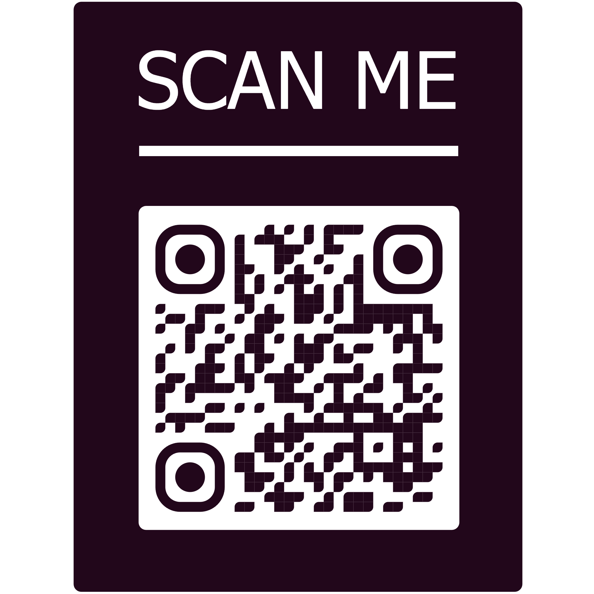

Cyber999 is a cyber security incident response center operated by MyCERT (Malaysia Computer Emergency Response Team) to report incidents of cyberbullying that threaten the safety or privacy of internet users. A trained Incident Handler will help the complainant resolve the reported incident. Incident operators also work with relevant departments at CyberSecurity Malaysia or other organisations such as law enforcement agencies, regulatory bodies, and internet service providers to help resolve the complaints.
